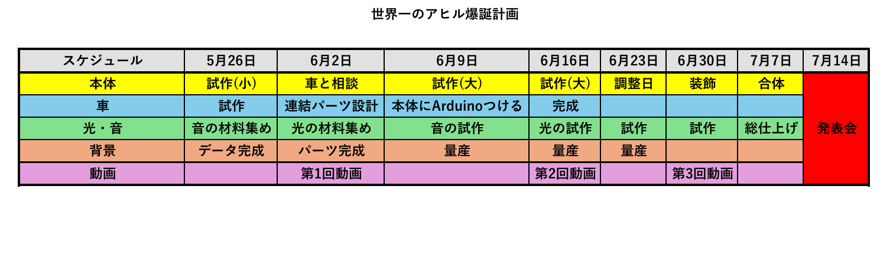

Project Note
世界一のアヒルを作る

[概要]
世界一のアヒルを作ります。何をもって世界一なのか、我々もまだわかりません。概要は随時更新します。更新されるたびに「世界一」が具体的になっていく（予定）です。
[プロセスメモ]
■＝考えないといけないこと、疑問など
●＝具体的にやること
→＝やったこと
■アヒルの本体、車、光・音、背景のサイズ感を一致させる
●話し合いながら各グループで試作を進めてもらう。自分がグループの橋渡しになる。
■どのようにアヒルを走らせる？光らせる？
●車チームと光チームのイメージを全体に共有させる。試作していく上で車チームと光チームが作ったパーツを本体とうまく合体させることができるように、
各グループの報連相を自分がまとめる。
■世界一のアヒルのコンセプト・魅力とそのPR方法
●14人の願望とアイデアをできるだけ自分が総括して、SNSをふんだんに使う。動画チームと相談。